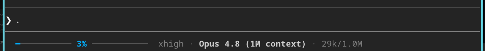
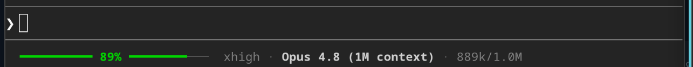
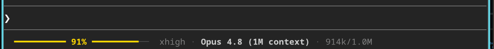
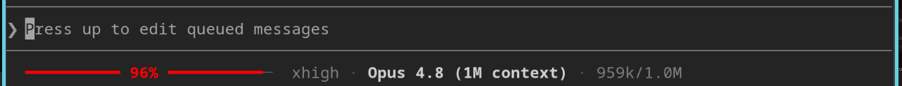

Claude Code status line — a context-window usage bar with model · effort · tokens, right in your prompt
Paste the repo link into your AI — it installs the status line for you.
repo: ai-agent-setup-instructions-claude-code-statusline…A thin coloured context-window usage bar with the percentage in the centre, plus effort · model · tokens — so you feel the context filling up and know exactly when to /compact.
the same bar in four real states — blue (just compacted) · green · yellow · red (act now)
One line — the whole context budget at a glance.
The bar never changes length; the percentage sits in its centre and the fill grows left → right. Everything else rides on the right.
━━━━━━━━━ 34% ━━━━━━━━────────── · high · Claude Opus 4.8 · 68k/200k
└──── context-window bar, % centered ────┘ effort model tokens
Reads the session JSON Claude Code pipes in — used_percentage, context_window_size, total_input_tokens, model.display_name, effort.level — and prints a single line. Runs without set -e, so a hiccup never blanks your status line.
The colour isn't just "how full" — it's a prompt to act.
The bar changes colour by how much of the context window is used. Here's why each one exists and what to do when you see it.
The context was probably just refreshed.
A near-empty window means a fresh session or a /compact that just ran. After a compact, anything you told this agent — its role or your project's coding rules — may have been summarized away. Blue is your cue to re-state the role and re-paste the rules, so it doesn't drift.

All good.
Healthy working range. The agent has plenty of room — just keep going.

Pay attention.
The window is filling up. Ask: can the AI realistically finish before it runs out? If it's doubtful, stop it, have it write a spec of the remaining work to a file, then continue after a /compact — rather than get cut off mid-task.

Same as yellow — but urgent.
The risk of a mid-task cutoff or degraded output is now high, and the colour pulls your eye on purpose. Capture the plan / spec to a file and compact now.

Two ways: let your AI do it, or one command.
It copies the script into ~/.claude/ and wires the statusLine block into settings.json.
Let your AI do it recommended
Paste the repo's link into Claude Code and say "install this status line." It also prints a short explainer of the colour scheme so you know how to read the bar.
Or — one command
git clone https://github.com/VibeCodeBlogger-Public/ai-agent-setup-instructions-claude-code-statusline-context-window-usage-bar-model-tokens-bash.git statusline cd statusline && ./install.sh
Manual: copy statusline.sh to ~/.claude/statusline.sh, chmod +x it, then add "statusLine": { "type": "command", "command": "~/.claude/statusline.sh" } to ~/.claude/settings.json and restart Claude Code. Needs bash, jq and awk (standard on Linux & macOS). Customize the bar width and colour thresholds at the top of the script.
See your context budget — and never get caught by a surprise /compact.
Free and open source (MIT). A clean, dependency-light status line for Claude Code.